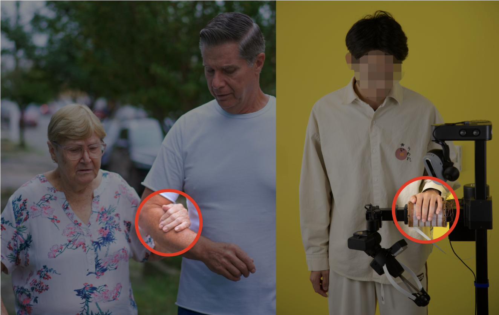

dakarai crowder
I am a PhD student in Computer Science at the University of Illinois Urbana-Champaign, advised by Wenzhen Yuan. My research interests include robotics, social physical human–robot interaction, tactile sensing, virtual reality, and haptics.
I currently work in the RoboTouch Lab on fabric-based tactile sensing for humanoid robots and virtual environments for human–robot interaction experiments.
PUBLICATIONS
-

Tactile-Based Human Intent Recognition for Robot Assistive NavigationUnder review arXiv
-

-
Extreme image transformations affect humans and machines differently
-
Robustness of Humans and Machines on Object Recognition with Extreme Image Transformations